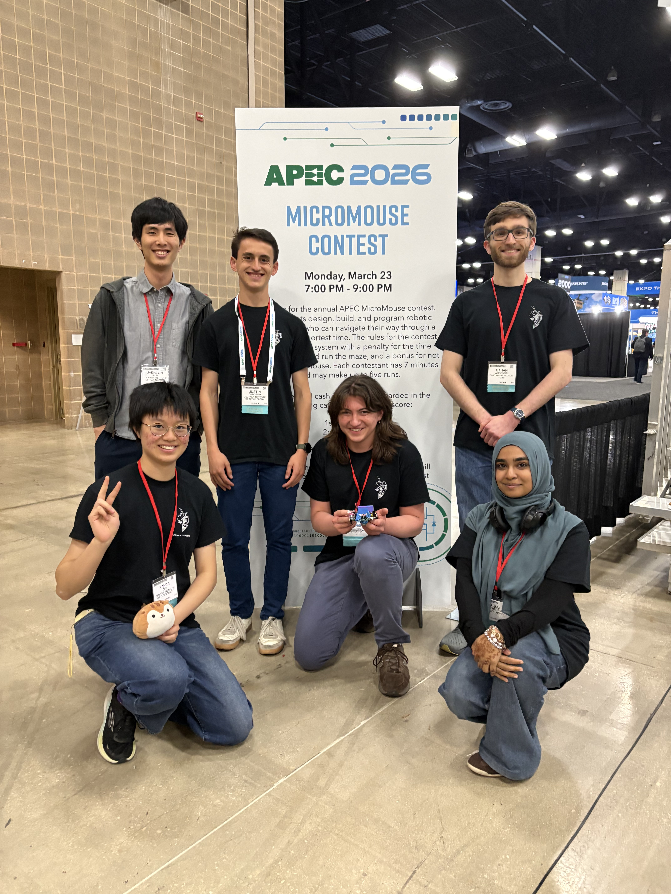

About Me
I get curious about specific things and build projects to understand them from the inside.
About Me

Most of my projects start with a question I can't get out of my head. What does the Mandelbrot set look like if you swap z² + C for a different function? What's actually happening inside a CPU when it runs a program? I tend to find out by building the thing — usually from scratch. Things are more fun that way! Constant throughout all of my work is using math and low-level computation to simulate, control, and visualize complex systems. That's shown up as a fractal renderer with a runtime expression-to-GLSL compiler, a charged-particle simulator with a trajectory optimizer, a 6502 breadboard computer, and a maze-solving robot I lead the software for on RoboJackets Micromouse. Teaching what I learn back to other people is part of why I do this, these projects feel so much more impactful when I am giving something to others.